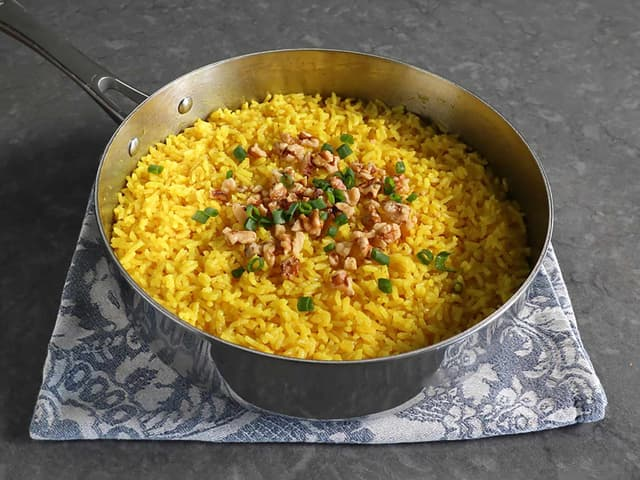

Golden Butter Rice

Recipe Description
This golden butter rice, flavored with ginger and turmeric, is a forgotten
way of cooking butter rice. It isn't cooked rice with butter stirred in,
it really is rice cooked in butter. This is my favorite version, with
seasonings inspired by a classic Indian drink called golden milk.
Recipe Ingredients
- 1/2 cup unsalted butter
- 1 tablespoon finely grated fresh ginger
- 1 1/4 teaspoons ground turmeric
- 1/4 teaspoon cayenne pepper
- 1 tablespoon brown sugar
- 1 teaspoon fine salt
- 2 cups basmati rice or other long grain white rice
- 3 cups water
- 1/3 cup chopped walnuts (optional)
- 1/3 cup sliced green onions (optional)